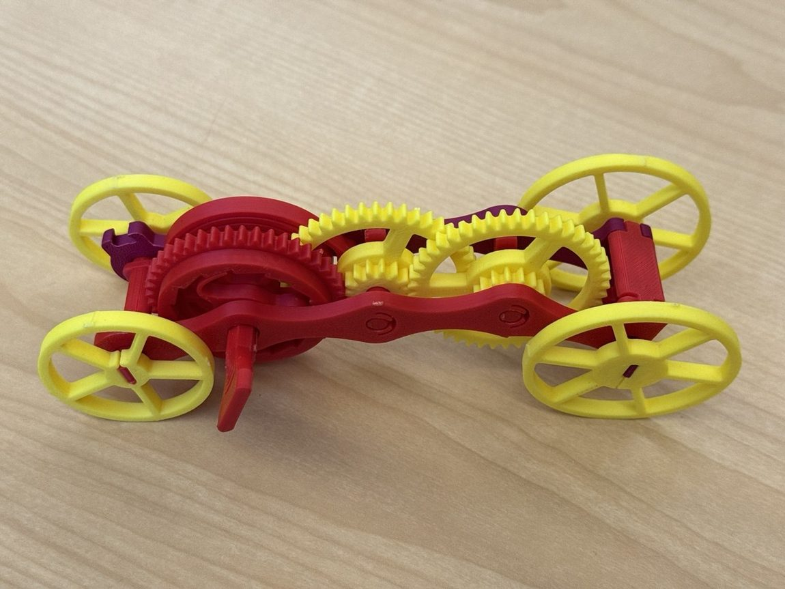
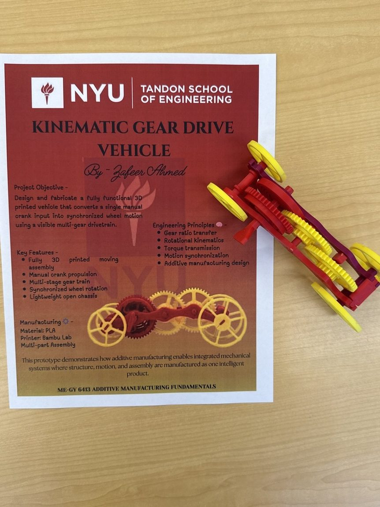

08 / ADDITIVE MANUFACTURING
Kinematic Gear-Drive Vehicle
Motion, printed.
A 20-part vehicle with a three-stage gear train, developed through three print iterations.
- Role
- Sole designer and fabricator
- Context
- Final project, ME-GY 6413 Additive Manufacturing Fundamentals, NYU Tandon, Spring 2026
- Tools
- CAD for DfAM, Bambu Lab FDM printer, PLA
- Scope
- Drivetrain, structural frame, gear train and wheel assemblies, all printed
- Output
- A working vehicle converting one crank input into synchronized wheel motion
- Skills
- DfAM
- Gear train design
- Tolerance stack-up
- FDM / PLA
- Part orientation
- Assembly integration
A 20-part fully printed vehicle built around a three-stage gear train. I ran a worst-case tolerance stack-up across the train and specified ±0.15 mm running clearances to absorb FDM dimensional variation and evaluate meshing through prototype iterations, then iterated three print cycles to a fully operational prototype.



±0.15 mm running clearance3-stage gear train3 print iterations20-part printed assembly
Tolerance stack-upGear train designDfAMPLA / FDM